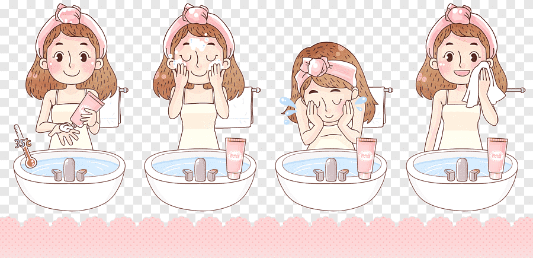
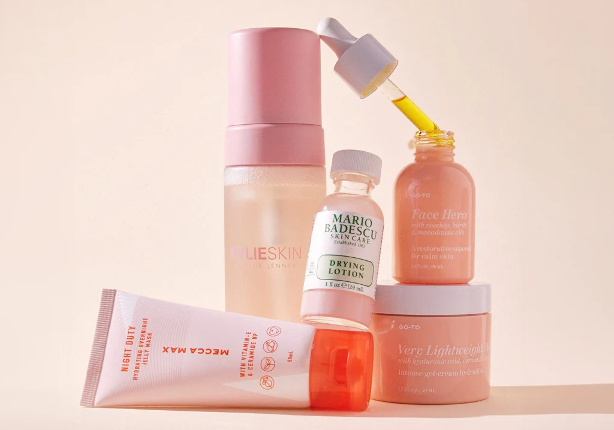

6 sai lầm chăm sóc da khiến da càng yếu đi
Nhiều người chăm sóc da rất kỹ nhưng da vẫn yếu, dễ kích ứng và nổi mụn. Nguyên nhân thường đến từ những sai lầm chăm sóc da phổ biến dưới đây.
1. Rửa mặt quá nhiều lần trong ngày
Rửa mặt quá 2–3 lần/ngày khiến da mất lipid tự nhiên, làm skin barrier suy yếu, da khô, bong tróc hoặc tiết dầu bù trừ.

2. Tẩy tế bào chết quá thường xuyên
Việc tẩy da chết quá nhiều làm phá vỡ cấu trúc hàng rào bảo vệ da, khiến da dễ kích ứng và viêm.

3. Lạm dụng treatment mạnh
Retinol, AHA, BHA giúp cải thiện da nhưng nếu dùng sai cách sẽ làm da yếu, bong tróc và dễ kích ứng.
4. Dùng quá nhiều sản phẩm cùng lúc
Layer quá nhiều sản phẩm khiến da quá tải, dễ bít tắc và giảm khả năng tự phục hồi.
5. Bỏ qua kem chống nắng
Không dùng kem chống nắng khiến tia UV phá hủy collagen và làm hàng rào bảo vệ da suy yếu nhanh chóng.
6. Thay đổi sản phẩm liên tục
Việc đổi sản phẩm liên tục khiến da không kịp thích nghi, dễ kích ứng và nổi mụn.

Kết luận
Chăm sóc da hiệu quả không nằm ở việc dùng thật nhiều sản phẩm, mà là hiểu da – chăm da đúng – bảo vệ hàng rào da.